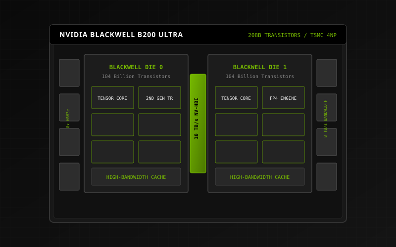
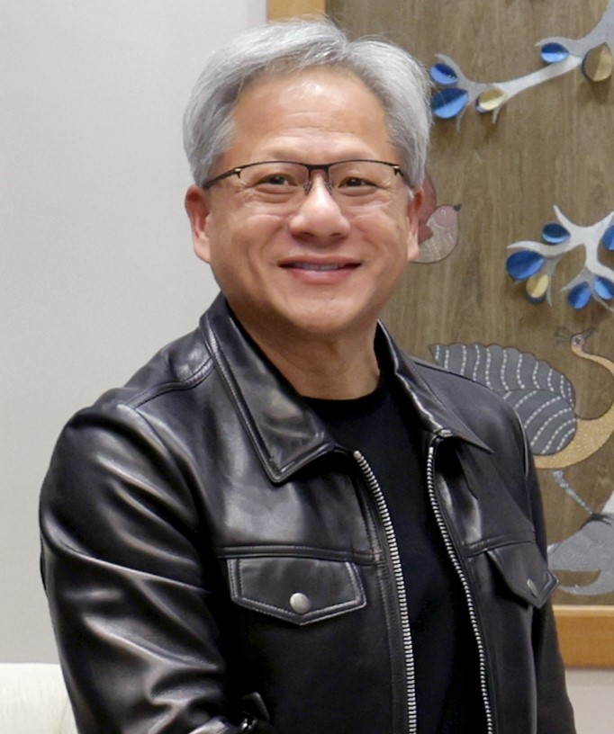
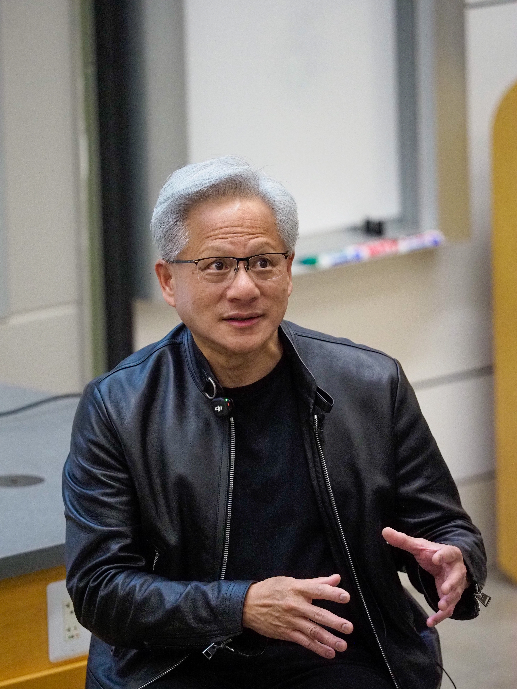
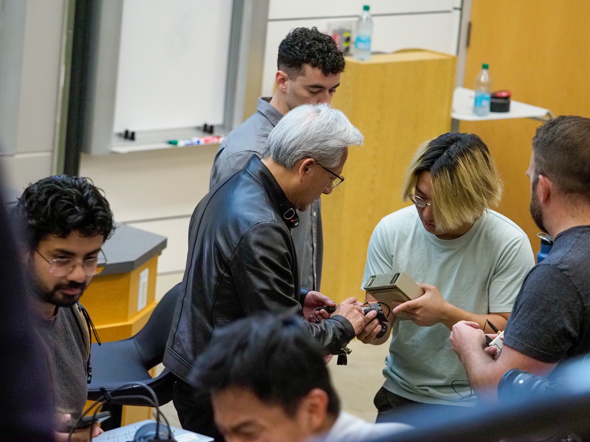
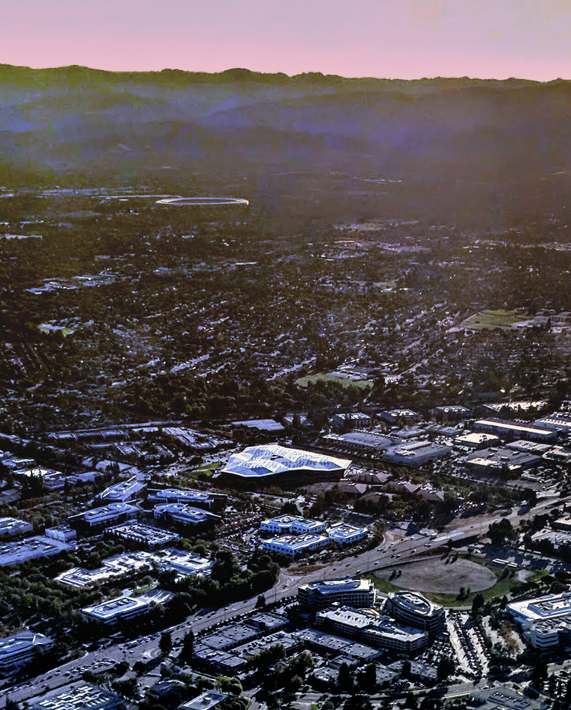
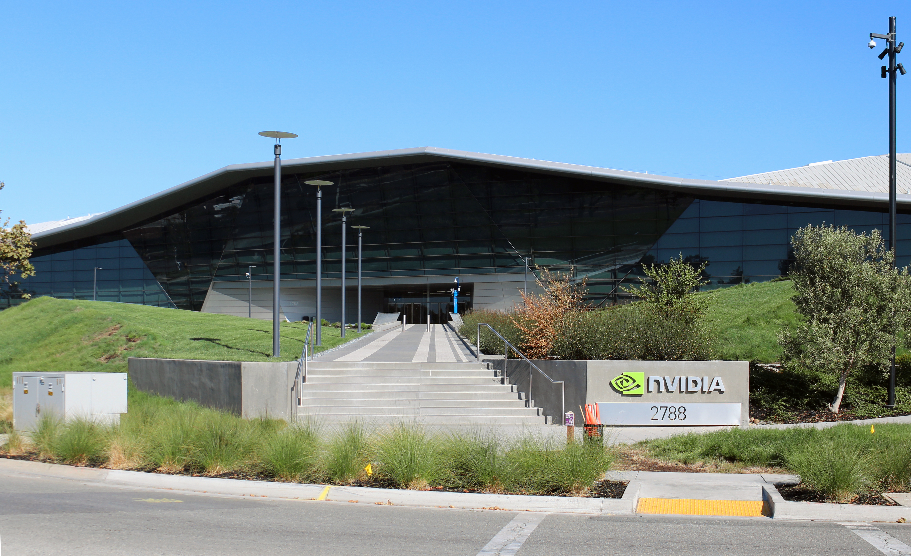

BEYOND ACCELERATION.
The thirty-year chronicle of specialized computing, the invention of the GPU, and the architecture powering the AI era.


From graphics, to accelerated computing, to the AI era.
Technology changes. The ambition to reinvent computing doesn't.
Over three decades, Jensen Huang guided NVIDIA from a 3-person startup founded over roadside diner breakfasts into the world's premier computing architecture powerhouse. The governing ethos has remained resolute: solve computing problems that ordinary general-purpose processors cannot touch.
Inventing technologies for markets that do not yet exist, from CUDA in 2006 to Omniverse in 2020.
Direct communication architecture where information moves friction-free across 29,600+ engineers worldwide.
CULTURE OF REINVENTION.



ENDEAVOR & VOYAGER.
The Santa Clara headquarters buildings are designed around the triangle — the fundamental geometric polygon of 3D computer graphics.

FROM PEOPLE TO INTELLIGENCE.
Scroll through thirty years of continuous compounding: from human ideas to planetary AI factories.
Engineers, researchers, and first-principles thinkers driven by unsolved challenges.
Full-stack co-design: algorithms, architecture, chips, systems, and software.
Atomic-precision lithography: TSMC 4NP process, billions of interconnects.
From the NV10 graphics chip to the monolithic dual-die Blackwell B200 accelerator.
Parallel computing democratized via CUDA, transforming pixels into parallel math.
Specialized Tensor Cores and Transformer Engines processing neural network matrices.
Data-center scale supercomputers operating as monolithic unified intelligence engines.
PINNED LINEAGE SHOWCASE.
Scroll through seven foundational hardware and platform milestones.
ACCELERATED COMPUTING FOR THE AI ERA.
Computing has moved from individual chips to entire data centers operating as monolithic unified computers.
Traditional computing produces retrieval tokens; AI factories produce intelligence tokens. The DGX GB200 NVL72 enables 30× faster real-time inference for trillion-parameter large language models while slashing power and footprint by up to 25×.
GEFORCE RTX & FULL PATH TRACING.
Experience how real-time AI and hardware-accelerated bounding volume hierarchy (BVH) traversal solved the holy grail of computer graphics.
Full physically based multi-bounce indirect illumination, real-time caustics, and AI neural frame reconstruction running at over 120 FPS.
THE ERA OF PHYSICAL AI.
AI models that understand the laws of physics, operate in 3D space, and manipulate the physical world.

NVIDIA DRIVE Thor
Next-generation centralized automotive computer delivering 2,000 TFLOPS of FP4 compute for autonomous driving, automated parking, and generative AI cockpit interaction.
Omniverse & Isaac Sim
Industrial digital twins built on OpenUSD and PhysX 5. Robots learn in millions of synthetic simulated worlds before physical hardware deployment.
Project GR00T
Generalist foundation model for humanoid robot reasoning, multimodal coordination, and natural language instruction following.
Isaac Perceptor
Multi-camera 3D surround-vision stack for autonomous mobile robots operating in dynamic warehouses and manufacturing floors.
Isaac Manipulator
Accelerated motion generation and dexterous manipulation algorithms for high-speed industrial robotic arms.
HYBRID QUANTUM SUPERCOMPUTING.
Unifying classical GPU acceleration with quantum processing units (QPUs).
NVIDIA CUDA-Q is an open-source, QPU-agnostic platform allowing researchers to write hybrid algorithms where sub-microsecond NVLink interconnects route classical computing to GPUs and quantum circuits to QPUs.
THE NEXT ERA IS BEING BUILT NOW.
From a San Jose diner booth to the foundation of modern artificial intelligence and physical robotics, the journey of accelerated computing continues.